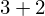
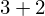
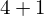
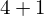
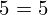

Show the Proof¶
In [1]:
import proveit
# Automation is not needed when only showing a stored proof:
proveit.defaults.automation = False # This will speed things up.
proveit.defaults.inline_pngs = False # Makes files smaller.
%show_proof
Out[1]:
| step type | requirements | statement | ||
|---|---|---|---|---|
| 0 | instantiation | 1, 2, 3, 4 | ⊢  | |
 : , : ,  : :  , ,  : , : ,  :  :  | ||||
| 1 | theorem | ⊢  | ||
| proveit.logic.equality.four_chain_transitivity | ||||
| 2 | theorem | ⊢  | ||
| proveit.numbers.numerals.decimals.add_3_2 | ||||
| 3 | instantiation | 5 | ⊢  | |
 : : | ||||
| 4 | instantiation | 6, 7 | ⊢  | |
: ,  : : | ||||
| 5 | axiom | ⊢  | ||
| proveit.logic.equality.equals_reflexivity | ||||
| 6 | theorem | ⊢  | ||
| proveit.logic.equality.equals_reversal | ||||
| 7 | theorem | ⊢  | ||
| proveit.numbers.numerals.decimals.add_4_1 | ||||